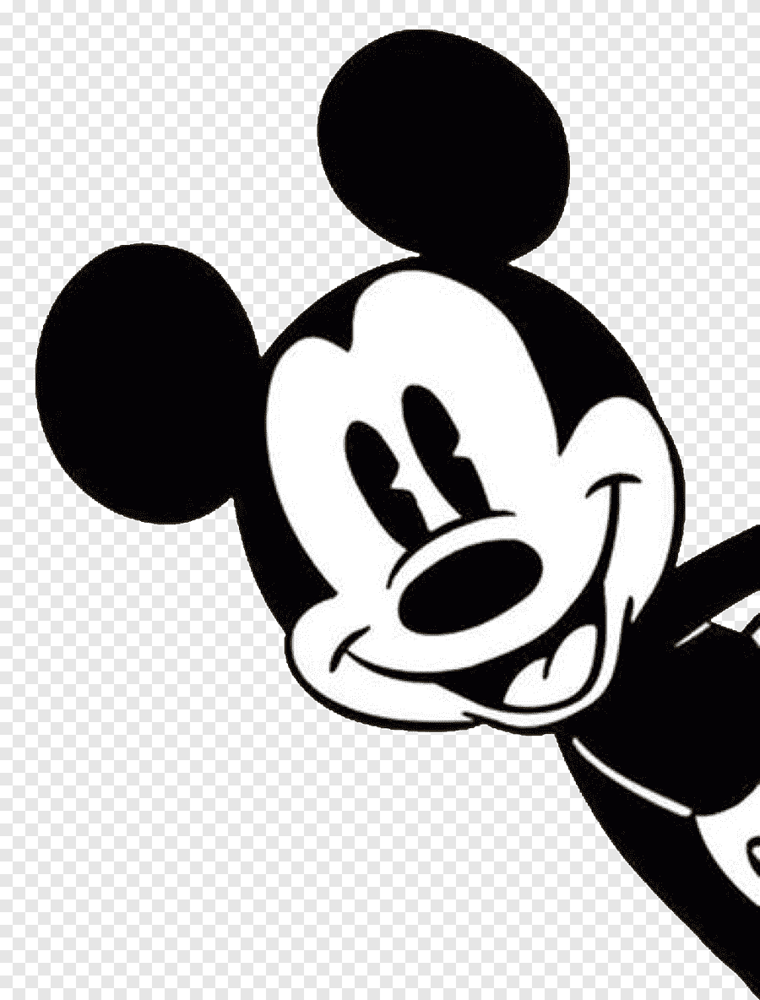

Mickey is the best
 Mickey Mouse is an animated cartoon character co-created in 1928 by Walt Disney and Ub Iwerks. The longtime mascot of The Walt Disney Company, Mickey is an anthropomorphic mouse who typically wears red shorts, large yellow shoes, and white gloves. Taking inspiration from such silent film personalities as Charlie Chaplin’s Tramp, Mickey is traditionally characterized as a sympathetic underdog who gets by on pluck and ingenuity.[2] The character’s status as a small mouse was personified through his diminutive stature and falsetto voice, the latter of which was originally provided by Disney. Mickey is one of the world's most recognizable and universally acclaimed fictional characters of all time. Created as a replacement for a prior Disney character, Oswald the Lucky Rabbit, Mickey first appeared in the short Plane Crazy, debuting publicly in the short film Steamboat Willie (1928), one of the first sound cartoons. The character was originally to be named “Mortimer Mouse”, until Lillian Disney instead suggested “Mickey” during a train ride. The character went on to appear in over 130 films, including The Band Concert (1935), Brave Little Tailor (1938), and Fantasia (1940). Mickey appeared primarily in short films, but also occasionally in feature-length films. Ten of Mickey's cartoons were nominated for the Academy Award for Best Animated Short Film, one of which, Lend a Paw, won the award in 1941. In 1978, Mickey became the first cartoon character to have a star on the Hollywood Walk of Fame.